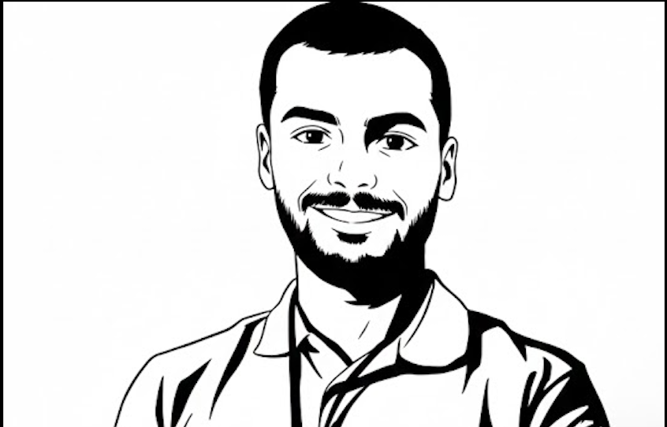

Hi I'm
Yousef Odeh
As a motivated second-year Software Engineering student at Princess Sumaya University for Technology, I am continually expanding my skills across web development and core programming languages such as C, C++, C#, HTML, CSS, and JavaScript. I enjoy building simple, functional, and responsive interfaces while focusing on clean structure and user-centered design. Through university projects, certifications, and participation in competitive programming contests, I’ve strengthened my problem-solving abilities and developed a strong foundation in technology, self-learning, and critical thinking. I am committed to growing my expertise and contributing effectively to future technical projects.